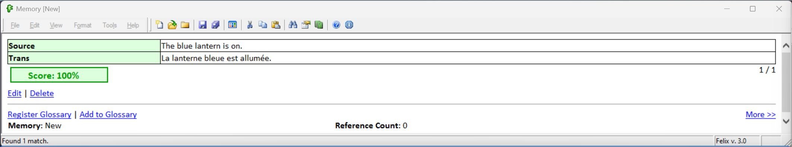
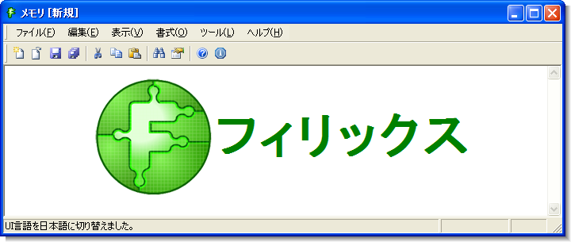

1. About Felix¶
Felix is a translation memory tool that will help you translate faster, more accurately, and more consistently. Felix takes over many of the repetitive, boring, and technically complex tasks of the translation process, enabling you to concentrate on producing better translations faster. Demand for fast turnaround, consistency, and support for translation memory tools is growing in the translation industry, and Felix will help you meet those demands.
Felix is a “translator’s assistant”: it assists you in producing better translations more quickly, but still leaves you firmly in control of the translation process. Felix was developed for translators, by translators. The development and QA teams are all professional translators, who know the features and tools that a working translator needs.
Below are some of the major features of Felix:
- Work right from Microsoft Word, Excel, and PowerPoint
- Work with unlimited translation memories (TMs) and glossaries
- No limit on the size of TMs or glossaries
- Work with as many language pairs as you like
- Any language that you can display on Windows is supported
1.1. Quick Tour¶
Felix consists of two main components: a memory component and a glossary component. Both components feature a similar, intuitive user interface, but the two components have different and complementary roles.

1.1.2. How it Works¶
As you translate a document, Felix keeps a record of each source sentence you translate, along with the corresponding translation and other information, in translation memory entries. Each time you translate a new sentence, Felix compares it with the entries in its database. If it finds an entry matching or nearly matching the current sentence, it suggests the translation to you:

Where Query is the sentence you are currently translating, Source is the sentence in the memory, and Trans is the translation you gave for that sentence. Score shows the similarity score for the two sentences. The parts that are different are bold and highlighted in red, for ease of recognition. You can choose to use the suggestion as-is, retrieve the suggestion and edit it, or ignore the suggestion and write a new translation.
An exact match shows a green Score: 100% indicator.


Meanwhile, as Felix searches the translation memory for matches, it also looks for occurrences of your glossary entries in that sentence, and lists any matches it finds. A glossary is a list of technical or frequently occurring terms that you would like to refer to as you translate.

You can import the glossary entry translations into your document as you type. Additionally, as you translate, Felix automatically adds short sentences and phrases to the glossary [1]. There are also numerous tools to quickly and efficiently build glossaries, both from Felix itself and from its various interfaces.
Translation memories and glossaries are stored in XML format, a widely recognized standard for data storage. Both memories and glossaries are saved with the same xml schema, making them highly interchangeable. Additionally, Felix can import memories and glossaries in Trados text and Microsoft Excel formats, and export memories and glossaries into Trados text files as well.
Felix uses Unicode internally. This means it can process and display just about any language, as well as most mathematical and other special symbols.
Felix includes a variety of features to help you edit, build, and manage your translation memories and glossaries. You can use Felix from Microsoft Word, Excel or PowerPoint, or control it from a custom application using automation.
Felix is also fully bilingual. A single shortcut key or menu command is all that is required to toggle the user interface between Japanese and English.

| [1] | Translation memory entries with a source field whose length is below a specific number of characters are automatically added to the glossary. You can configure this length in the user preferences. See Set User Preferences for details. |
1.2. System Requirements¶
- 64-bit Windows 10 or 11.
- Administrator rights to run the installer.
- 64-bit desktop Microsoft Office (Microsoft 365, Office 2021 or Office 2024) for the optional Word, Excel and PowerPoint add-ins.
See Installation for setup instructions.